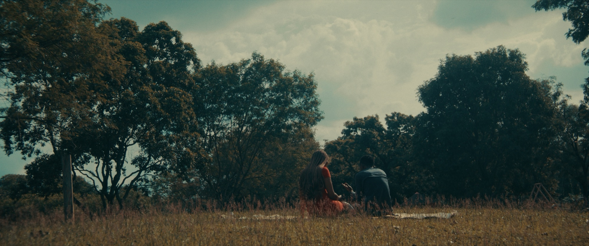
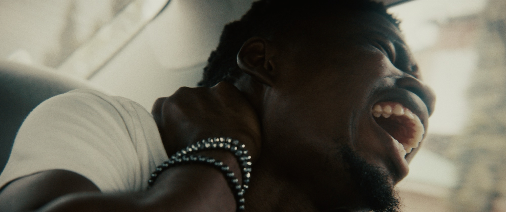
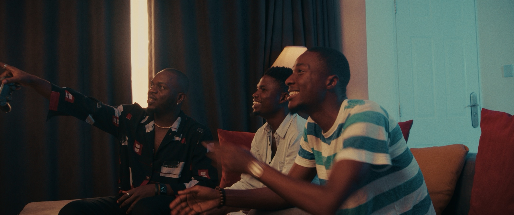
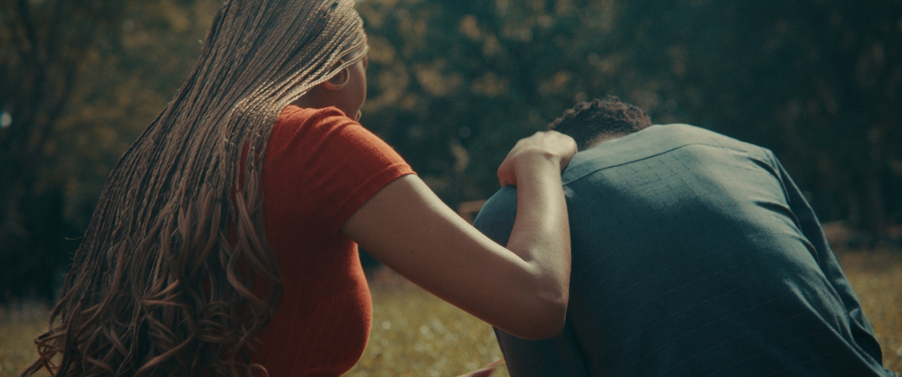
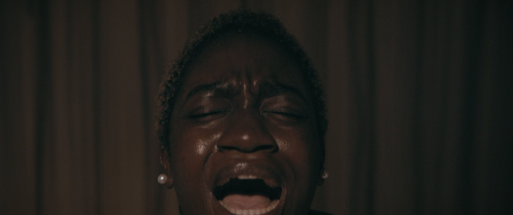

SHORT FILM · 2025
The Longest Trip
Every second is a quiet fight for life, identity, and meaning.
- ROLE
- Director, Director of Photography
- CO-WRITER
- Amaka Green
- SUBJECT
- Living with sickle cell
- YEAR
- 2025
SYNOPSIS
The Longest Trip is a short film that follows Gbenga, a young man living with sickle cell, caught between pain and perseverance.
The Longest Trip was directed by Adekola Emmanuel, who also co-wrote the film alongside Amaka Green. As the Director of Photography and someone living with sickle cell, Adekola brings a deeply personal perspective to the story, allowing him to visually express the pain, vulnerability, and strength woven into Gbenga's journey.
Through powerful, visual storytelling, it captures the moments most people never see, where every second is a quiet fight for life, identity, and meaning. A moving tribute to the strength of those who live this reality every day.
WATCH
PLAYS VIA YOUTUBE · OPEN IN A NEW TAB
STILLS



